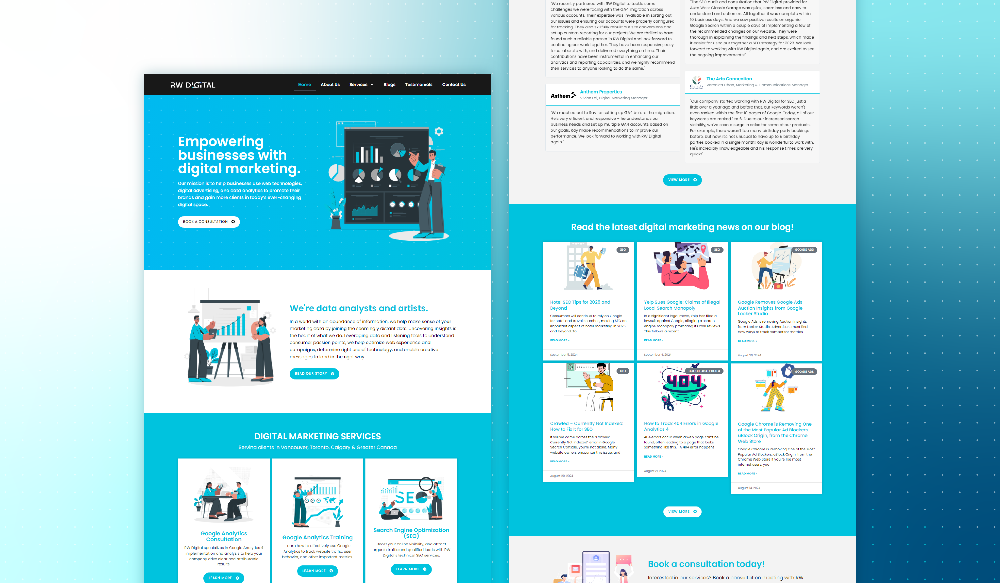
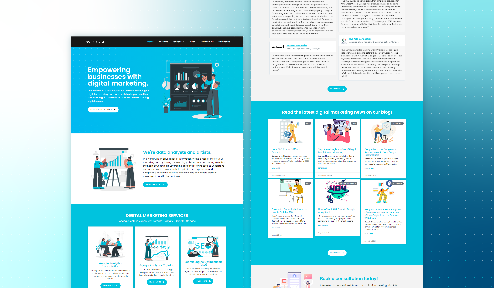
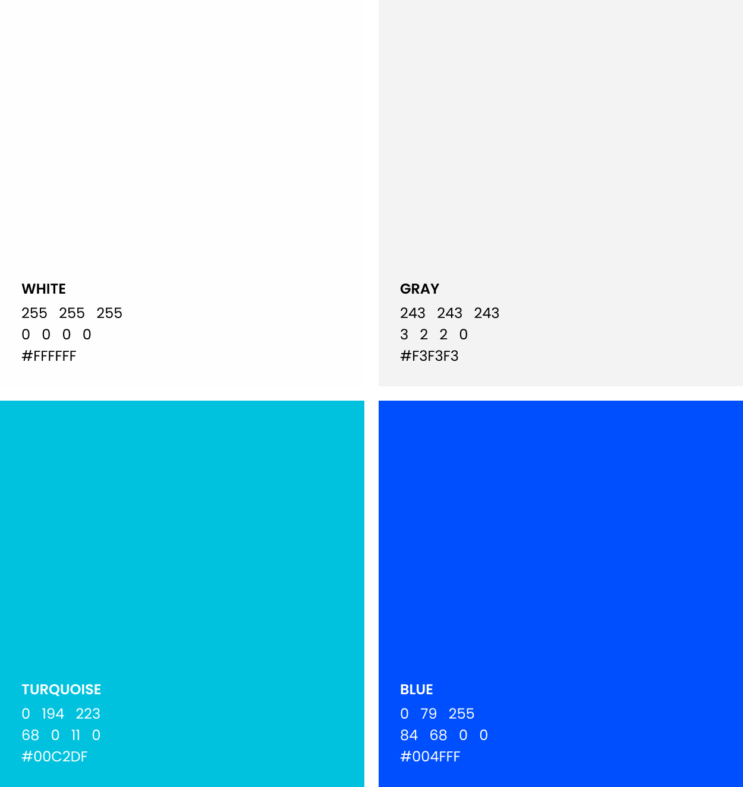
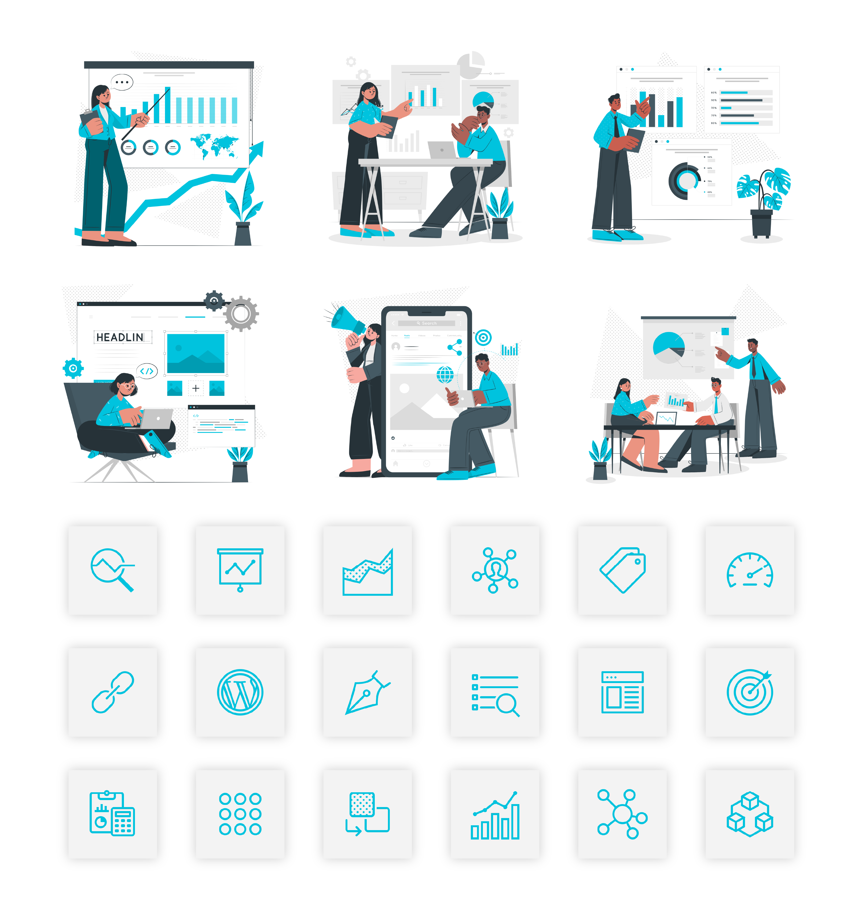
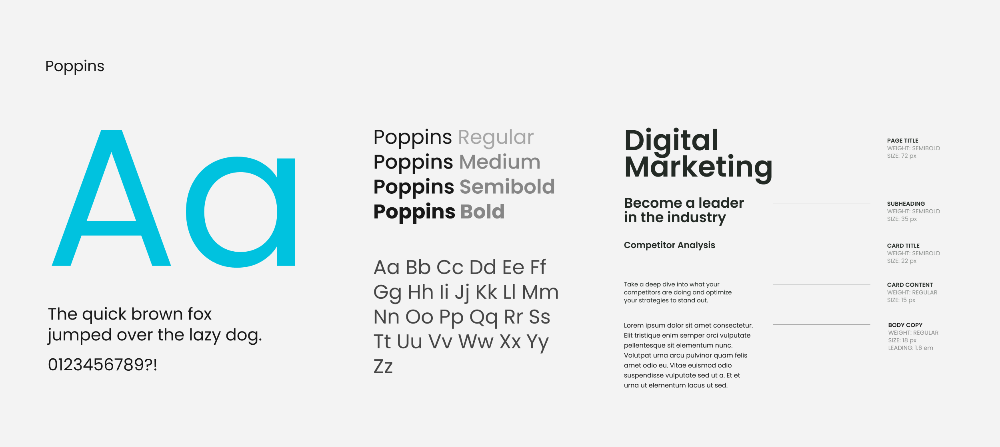
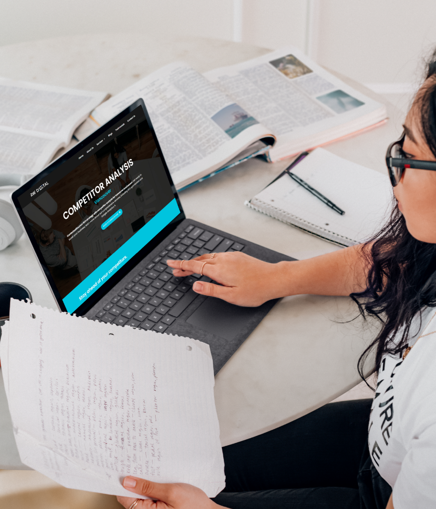
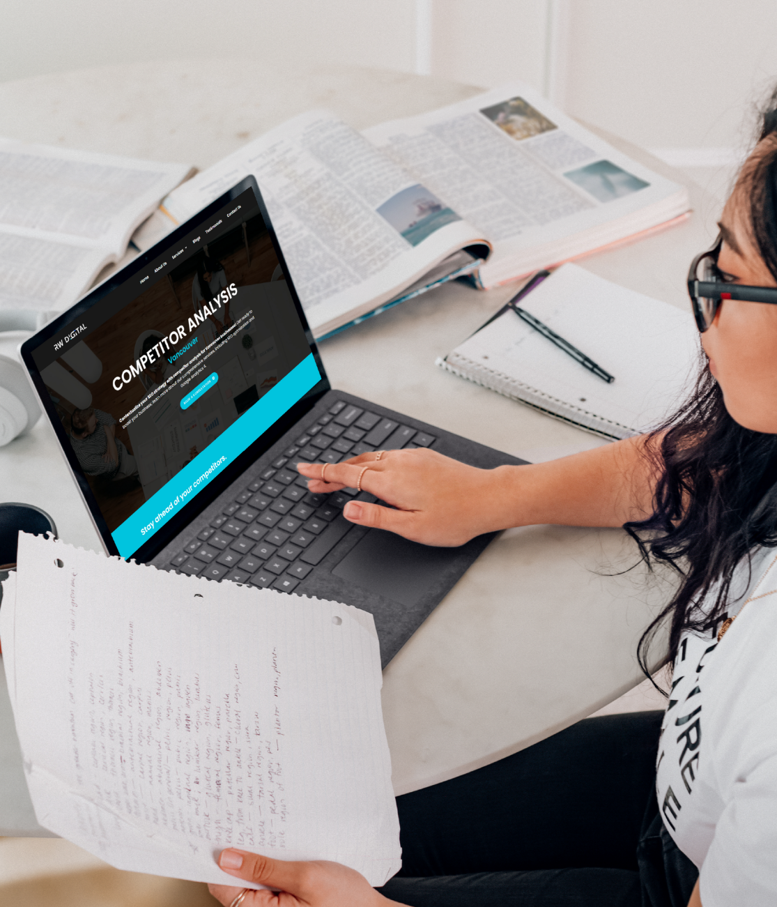
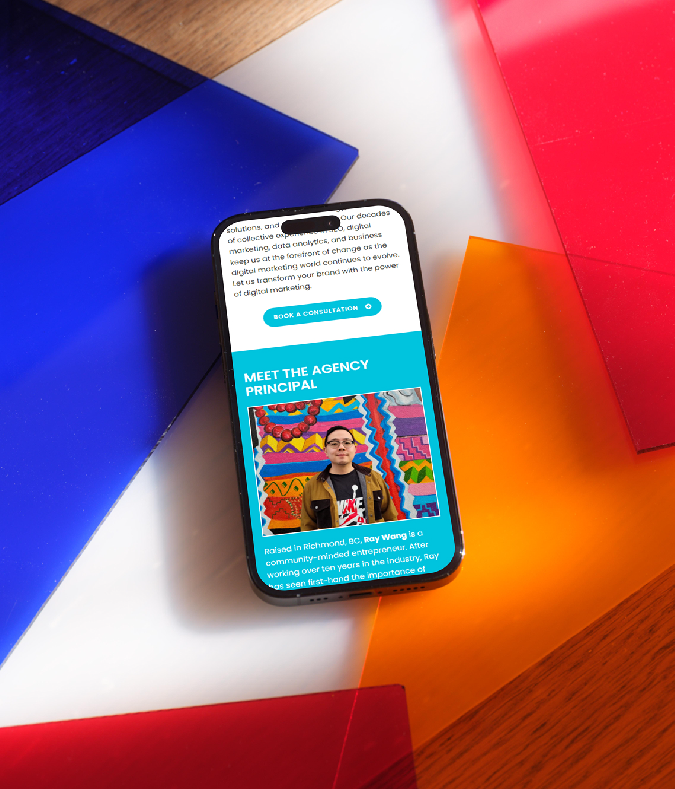

Works;
RW Digital.ca
RW Digital.ca


RW Digital.ca
2024
Web Design
Agency
Overview
As part of RW Digital's in-house design team, I was tasked by the agency principal to do a full refresh of the agency's website. The challenge was to apply the newly-established branding guidelines exhibited on the agency's social media channels to the site, emphasizing ease of access to services and agency information. The result was a SEO-compatible, responsive and user-friendly website at the forefront of the agency's brand. RW Digital aims to present a professional and credible approach to their work with clients and stance in the industry, which is reflected though the new design.

 




 



© Tany Dourev, 2024.
(Crafted with love & patience)
(Crafted with love & patience)